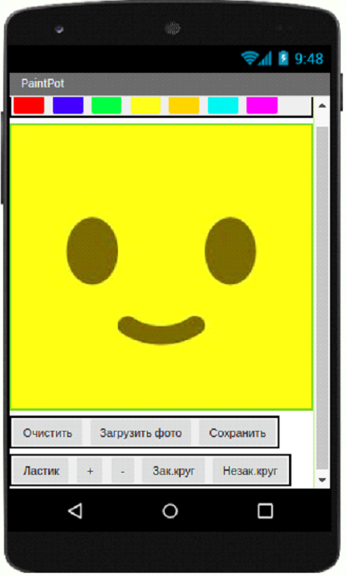

<link rel="stylesheet" href="projectStyle.css">

<section class="project-container">
	<div class="project-container__logo">
		
	</div>
	
	<p class="project-name">Проект 4. Приложение Paint</p>
	<div class="description-block">
		<article class="description-block__text">
			<div class="logos">
				<!--  -->
			</div>
			
			<p>Paint – это знакомая для всех программа, которая является графическим редактором. </p>
			<p>
				Графический редактор – это специальная программа, для создания, просмотра, а также редактирования
				графических изображений, таких как: рисунков, изображений, снимков на компьютере или телефонах.
			</p>
			<p>В наше время существует большое количество самых разных редакторов.</p>
			<p>Paint является самой доступной и понятной для начинающих пользователей.</p>
			<p>Задание</p>
			<p>Используя программу APP INVENTOR, создать приложение Paint для телефонов.</p>

			<p>Требования:</p>
			<ul>
				<li>Организовать выбор цвета кисти</li>
				<li>Создать ластик (инструмент для удаления поэлементно)</li>
				<li>Создать кнопку “очистить” (инструмент для очищения всего полотна)</li>
				<li>Задать размер полотна, на котором можно рисовать</li>
				<li>Создать кнопку выбора закрашенного или незакрашенного круга</li>
				<li>Создать кнопку для уменьшения круга</li>
				<li>Создать кнопку для увелечения круга</li>
				<li>Создать кнопку загрузки изображения в приложение</li>
				<li>Создать кнопку сохранения изображения</li>
				<li>Создать кнопку плюс, для увелечения размера кисти</li>
				<li>Создать кнопку минус для уменьшения размера кисти</li>
			</ul>

			<p>Компоненты:</p>
			<p>Кнопки, Холст, ВыборщикИзображений</p>

			<p>Пример интерфейса проекта</p>
			<div class="description-block__image">
				
			</div>
		</article>
	</div>
</section>